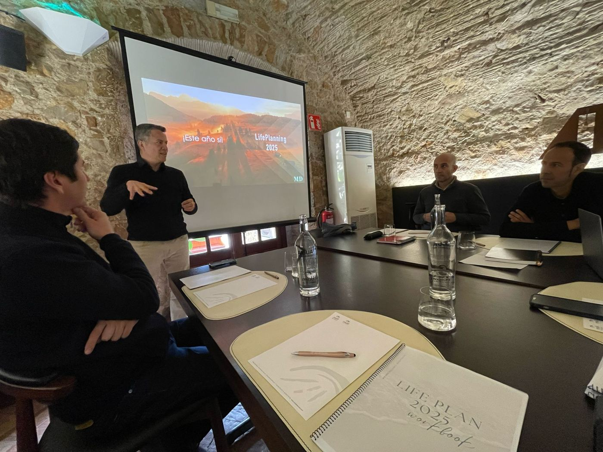
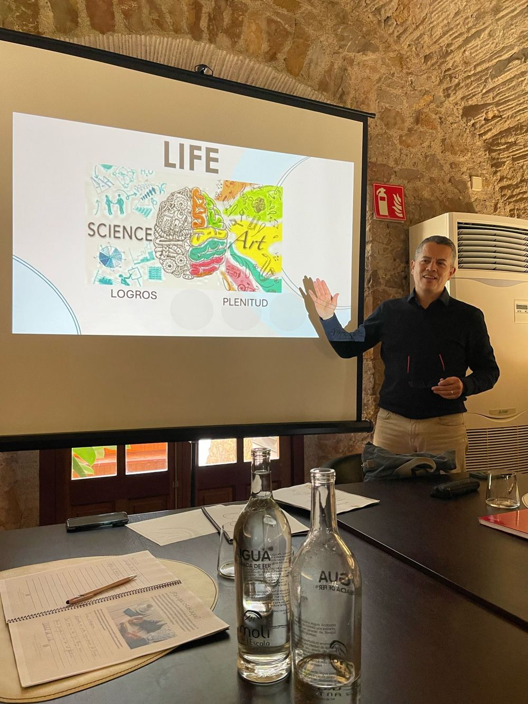

Workshop de planificación anual · Mataró (Barcelona)
Dos días para cerrar el año con perspectiva y diseñar el siguiente en todas las áreas de tu vida: carrera, crecimiento personal, salud y relaciones. No una lista de propósitos, sino un plan con razones, pasos y hábitos que lo sostengan.
Fechas
Jueves 14 y viernes 15 de enero de 2027
Horario
De 9:00 a 18:00, ambos días
Lugar
Mataró (Barcelona) · Hotel Atenea Port, por confirmar
Grupo
Máximo 20 personas
Formato
Presencial, en castellano
Inversión
495 € + IVA
Empiezas con buenas intenciones, pero el día a día se impone. Necesitas un plan que resista a febrero.
Salud, relaciones, aprendizaje, tiempo para ti: lo importante que nunca es urgente. Aquí tiene el mismo peso que el trabajo.
La motivación de un evento dura días. Un plan con razones claras, acciones concretas y hábitos diarios dura todo el año.

01
Cómo interpretas el reto, el error y el cambio, con un test de mindset basado en la investigación de Carol Dweck, y qué patrones te acercan o te alejan de lo que quieres.
02
Antes de planificar, cerrar: los momentos y logros del año, lo que no quieres repetir y cómo convertiste en realidad sueños que parecían lejanos.
03
Tu visión a uno y tres años, el «para qué» de cada objetivo y tu mapa de ruta en tres áreas, con acciones concretas desde el primer día.
04
Los sistemas diarios que sostienen el plan cuando baja la motivación: preparación mental, foco y revisión del progreso.
La vida no avanza en línea recta, sino en ciclos. Reconocer en qué estación estás cambia qué objetivos tienen sentido este año, y quita la presión de tener que crecer siempre al mismo ritmo.
Preparar y sembrar
Crecer y expandir
Evaluar y soltar
Descansar y redefinir

Life Planning combina la ciencia de conseguir objetivos con el arte de disfrutar el camino. Se apoya en la investigación sobre mentalidad de crecimiento (Carol Dweck), aprendizaje y cambio de opinión (Adam Grant) y formación de hábitos, y en más de 20 años liderando equipos y 6.000 horas de coaching ejecutivo. Lo hago cada enero desde hace años, con grupos reducidos para que cada persona tenga espacio.
Los vídeos se cargan desde YouTube solo cuando pulsas reproducir.
495 € + IVA
Incluye las dos jornadas de trabajo, de 9:00 a 18:00, el workbook Life Plan y todos los materiales.
No incluye alojamiento, comidas ni transporte.
Al reservar tu plaza, te escribiré personalmente con los datos de pago y, si lo necesitas, opciones de alojamiento.
No. Life Planning está pensado para profesionales en general que quieren planificar el año con método en todas las áreas de su vida, no solo en la profesional.
Las dos jornadas completas de trabajo, de 9:00 a 18:00, el workbook Life Plan y todos los materiales. El precio es de 495 € más IVA. El alojamiento, las comidas y el transporte no están incluidos.
En Mataró (Barcelona). La sede prevista es el Hotel Atenea Port, pendiente de confirmación. Te confirmaré el lugar exacto al reservar.
No. Es un workshop presencial, en castellano, con un grupo de máximo 20 personas.
No. Solo reservar los dos días completos y venir con disposición a desconectar del día a día y pensar en ti.